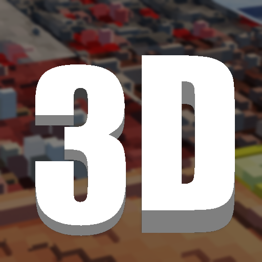

3D Vanilla" is a resource pack for Minecraft that aims to bring a 3D look to the game's vanilla (default) textures, while still maintaining the original look and feel of the game. It achieves this by using a technique called parallex occlusion mapping (POM) POM is a method of adding 3D detail to 2D textures by creating a separate texture map that stores information about the height and slope of the surface being textured. When this map is used in combination with a shader program, it can create the illusion of 3D geometry on a flat surface. In the case of "3D Vanilla," the resource pack uses POM in the complementary shader to add 3D detail to the game's vanilla textures. This can give the game world a more realistic and immersive look, without changing the overall style or aesthetic of the game. Overall, "3D Vanilla" is a resource pack that offers a way for players to add a 3D look to their Minecraft game without straying too far from the original look and feel of the game. It's a good option for players who want to enhance the visuals of their game without altering the art style.
required is a shader, which supports Parallax Occlusion Mapping. The resource pack was tested on Complementary version 4.6. 